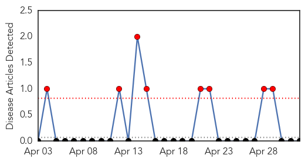
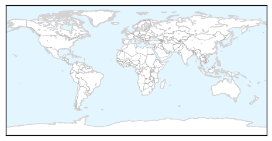
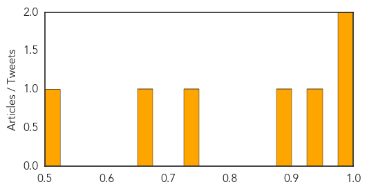

West Nile Virus
30-Day Web Trend
8 alerts, 0 warnings

30-Day Twitter Trend
0 alerts, 0 warnings

Article Locations
Article Confidences

Top Articles:
-
No articles found for May 02, 2014
Top Tweets:
-
No tweets found for May 02, 2014
Measles
30-Day Web Trend
3 alerts, 1 warnings

30-Day Twitter Trend
0 alerts, 0 warnings

Article Locations

Article Confidences
Top Articles:
- 0.999
- First Case Of Mysterious MERS Virus In America Confirmed By The CDC
- 0.977
- Manitoba measles case prompts warning about exposure at strip bar
- 0.935
- Delaware clinic, ER visitors may have been exposed to measles
- 0.882
- Lawrence Solomon: Vaccines can’t prevent measles outbreaks
- 0.744
- Number of imported cases of measles in Taiwan rises
- 0.654
- City declares Hamilton measles outbreak over
- 0.506
- Stop the Fear-Based Propaganda About Vaccines
Top Tweets:
-
No tweets found for May 02, 2014